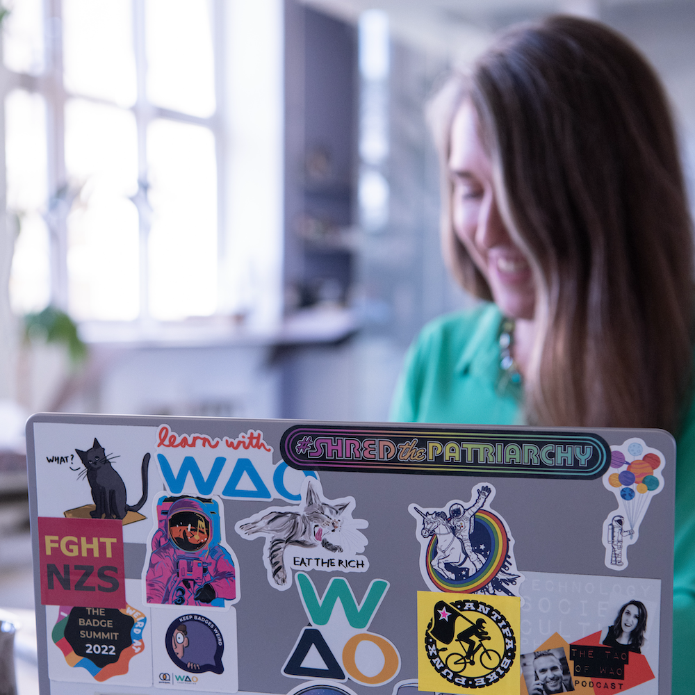
Hallo! Ich bin Laura Hilliger.
@epilepticrabbit (Mastodon oder BlueSky)
Mehr:
https://laurahilliger.com
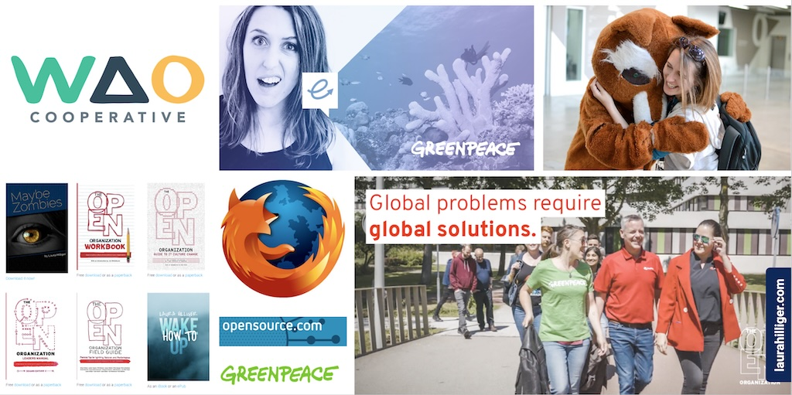
Aktivistin und Technologin in Open Source und digitale Rechte.
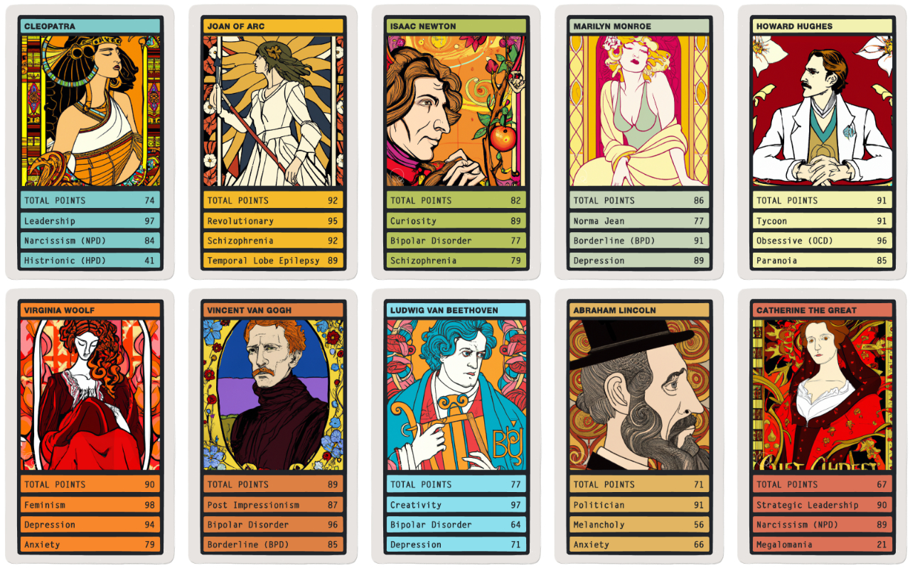
Ich bin kreativ und spielerisch und baue ganz viel Stuff.
Habe auch ein paar Bücher geschrieben, aber auf Englisch.
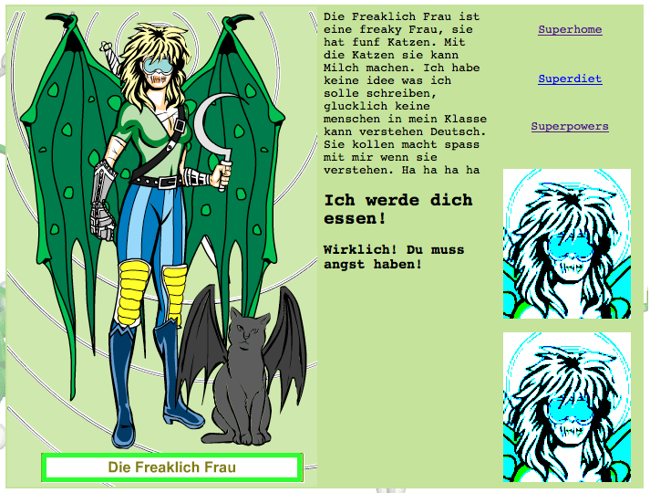
Webseiten haben wirklich so ausgesehen...und damals habe ich kein Deutsch gesprochen.
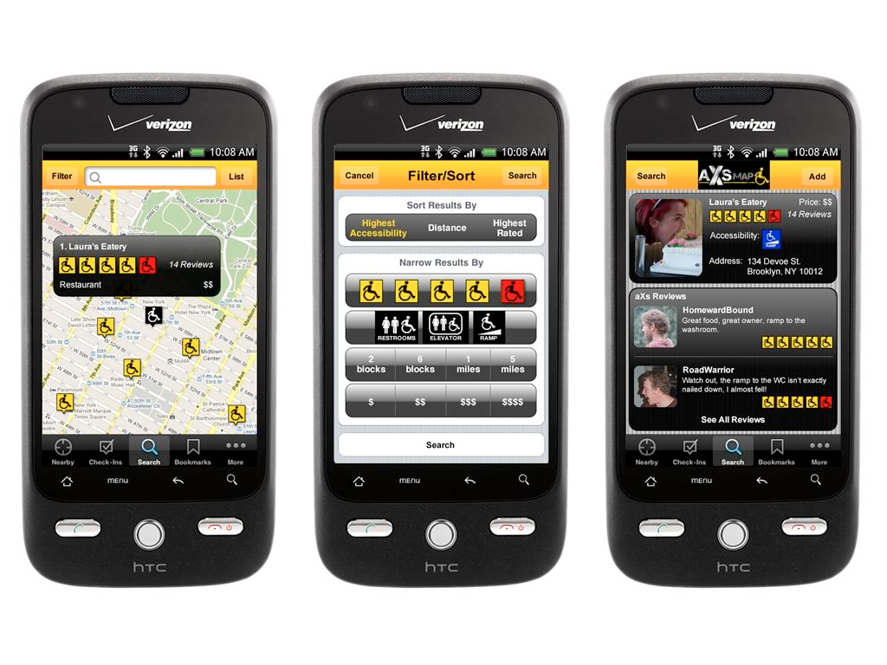
Wir haben auch seriöse Sachen gebaut.
Mozilla - die Firma hinter Firefox?
Ja, aber es ist eigentlich eine Stiftung.
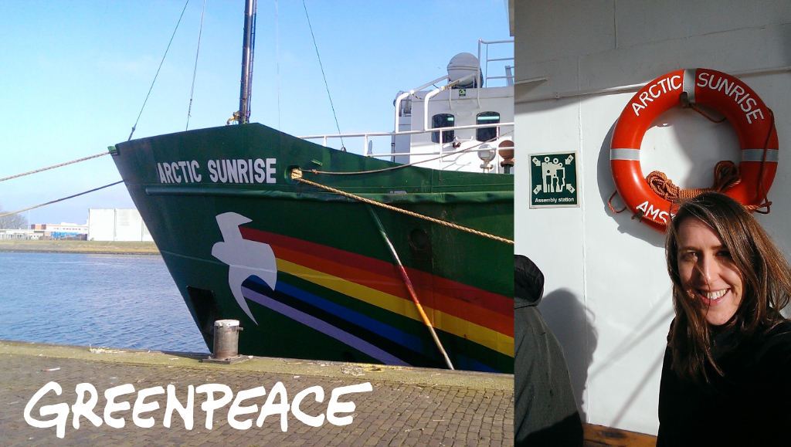
Etwas unglaublich Geil?
Aktivismus Training auf die Arctic Sunrise
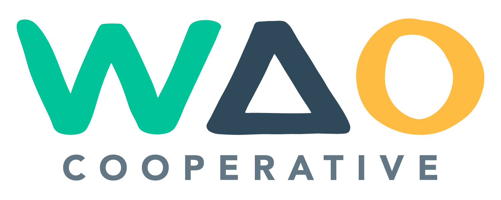
ist meine Genossenschaft.
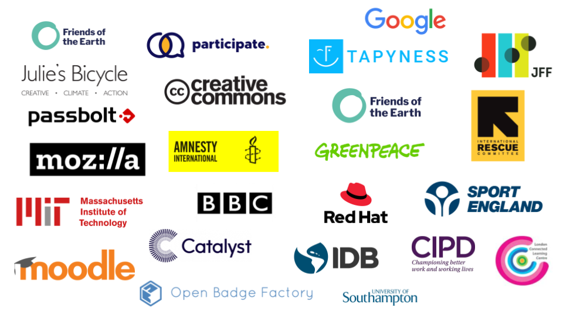
Ein Genossenschaft gehört den Arbeiter:innen. Das heißt dass ich kein Chef:in habe.
Unser Webseite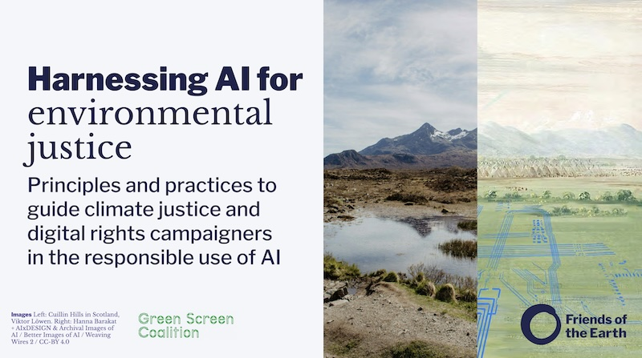
Jetzt mit KI & Klima bin ich immer wieder dort wo Technologie und unser Welt sich trifft.
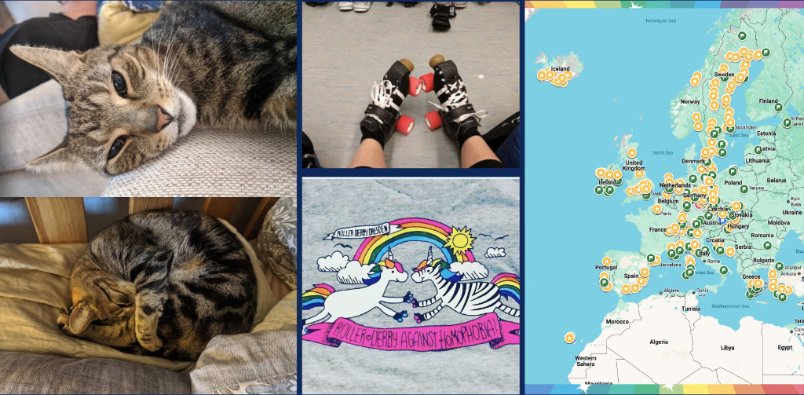
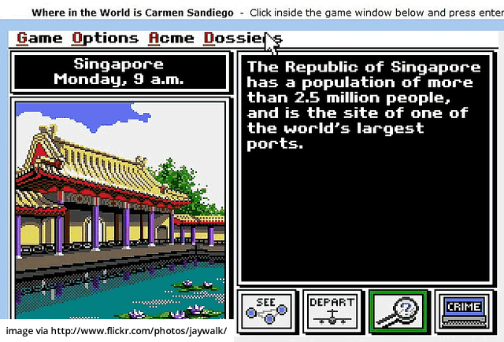
ich war immer interessiert.
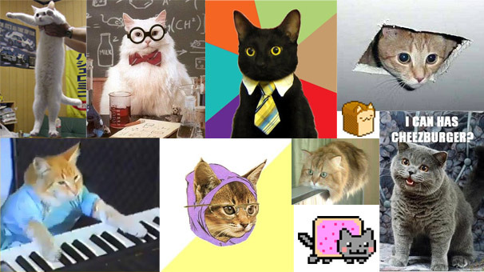
The Internet is made of CATS.
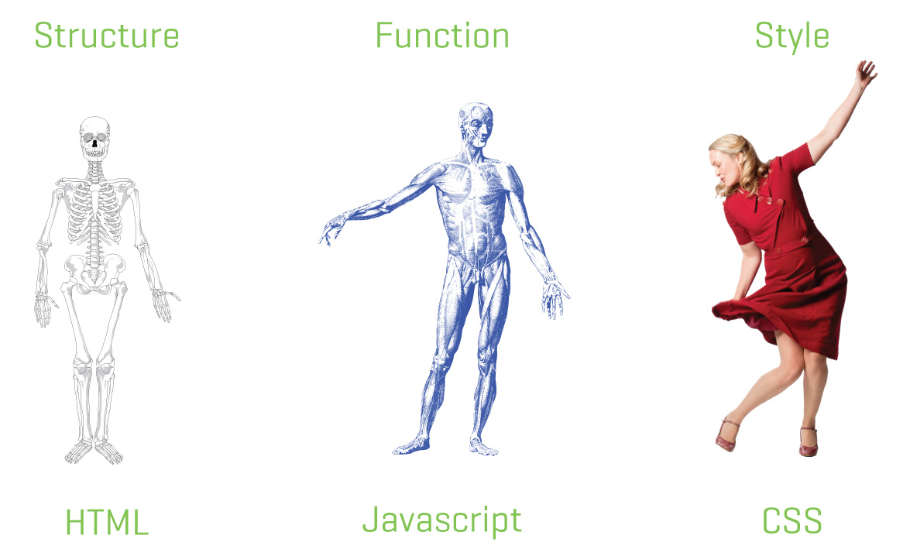
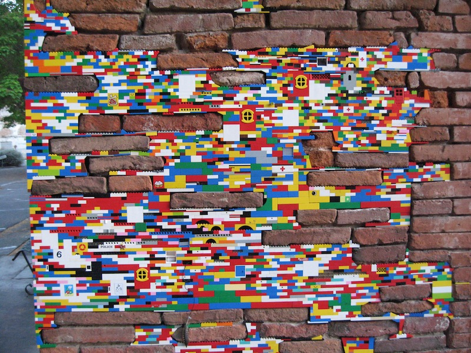
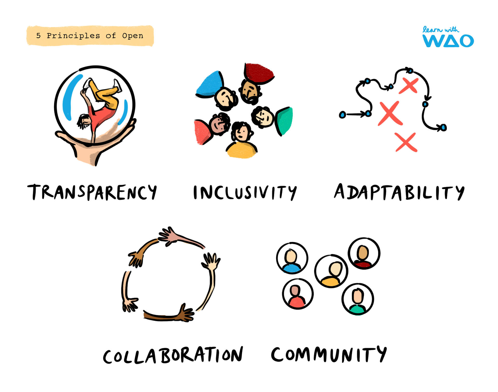
Auf Deutsch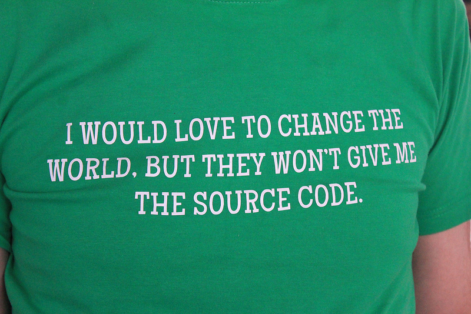
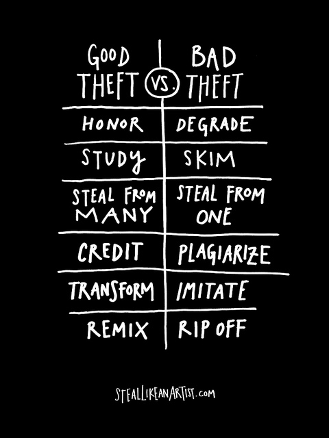
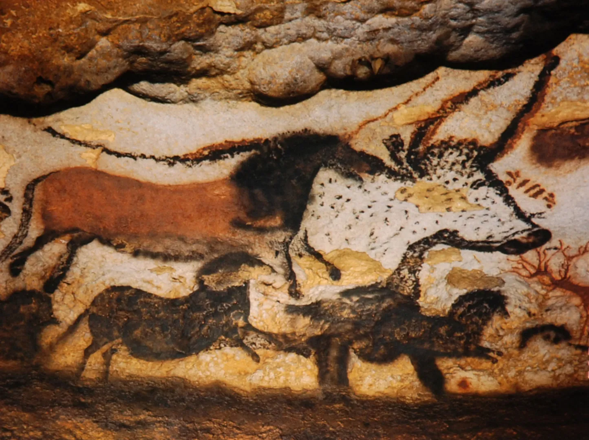
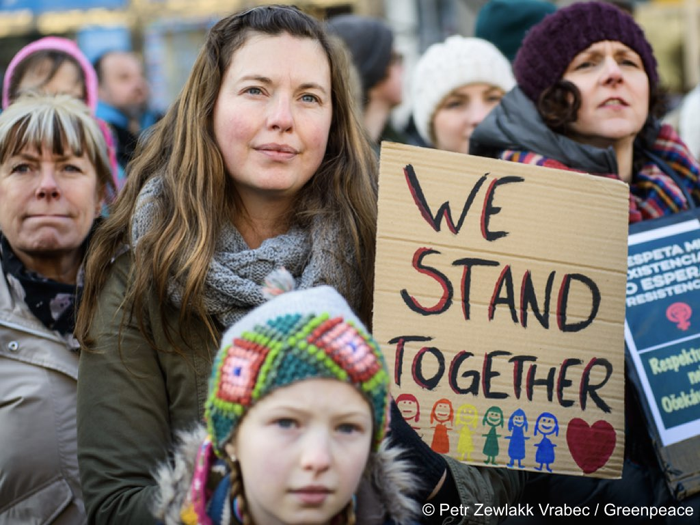
die digitale Welt ist RIESIG
und manchmal fühlen wir uns ganz klein.
Aber Menschen mit leidenschaft, sind die, die die Welt verbessern können.
Ihr habt MACHT...
Ihr könnt es für das Gute nutzen.
Use a spacebar or arrow keys to navigate